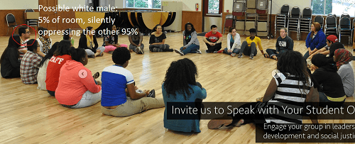
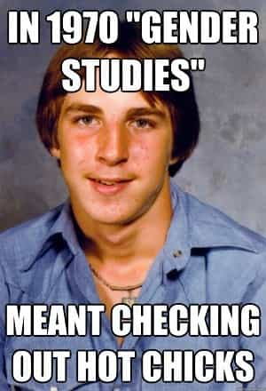
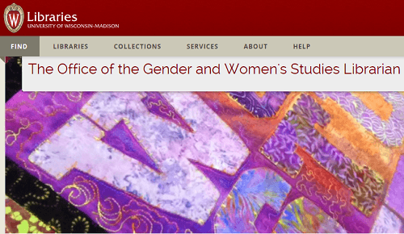

is an aspiring philosopher king, living the dream, travelling the world, hoarding FRNs and ignoring Americunts. He is a European at heart, lover of Latinas, and currently residing in the USA.


The University of Wisconsin Madison recently announced a six-week program on masculinity, copied after similar programs at other American colleges.
The program, titled Bros, Dudes, and Men on Campus: Unpacking Masculinity, plans to cover media, hook up culture, alcohol, violence, and pop culture. The school has received criticism after a story in The College Fix portrayed the seminar as a discussion of the negative effects of masculinity. Is there any truth to this claim?
The program is part of the university’s Multicultural Student Center. That’s right, they don’t just have a student center, they have a *Multicultural* Student Center. I’ve been to college, and it’s kind of implied that everything there is multicultural; every class I’ve taken or taught at a number of schools has a mix of ages, races, and sex. And students don’t need to be taught multiculturalism. Trust me, I wanted to get to know the tall, tan, friendly Egyptian girl in my freshman class much more than the pale fat snarky white chick. And yet, enormous resources are diverted to social programming.

The formal labeling of “multicultural” has at a minimum, the connotation that this is not a place for white males. The same way the “gender studies” department will never offer a single course on masculinity, but is just a thinly veiled codeword for feminism. And indeed, visiting the webpage of this multicultural student center, I made out one small photo of a possibly white male, along with a couple of minority males and at least 30 photos of females. If the title wasn’t enough, the photos clearly show that if you’re a white male, there’s not going to be anything of interest for you in your student center.

The school didn’t just build a multicultural student center though. They also hired an Office of Gender and Women’s Studies Librarian. I give them huge points for creativity there. Not in my wildest visions of what a Trumpocracy would be like did I even consider putting a man in every college library around the country, just to help fellow men find books discussing manly things, helping them direct their efforts to learn more about fat shaming, tips on game, encouraging them to study the negative effects of false rape accusations, and create new literature and art with a masculine theme.
The Women’s Studies librarian coordinates with a wider range of sexually segregated student resources, including the 4W Initiative at UW, Women’s Knowledge International, the UW System Gender & Women’s Studies Consortium, and the Chair on Gender, Wellbeing, and Culture of Peace at UW, and oversees the Women’s Knowledge Digital Library, which offers 82 different categories of women-centric topics which is so broad and comprehensive that they may as well do away with the non-women library entirely.

Perusing the Women’s Knowledge Digital Library was like entering an alternate reality universe. It’s fascinating in a way. For example, the category of Gender Based Violence offers a 2014 policy paper on “Closing the Gap: How to eliminate violence against women beyond 2015.”
The Women’s Knowledge Library: A trip into fantasyland!
(We’ll set aside the fact that the only “gap” is that men make up the vast majority of crime victims, including almost 80% of murder victims) because what strikes me is the massive creativity and imagination. They won’t just reduce violence. The authors have a plan to ELIMINATE violence against half the world’s population! I’ve never met a man with such an ambitious plan to stop male crime.
They finally stopped crime!
But wait, in fairness, the library didn’t forget about men. The bottom of the page lists 3 recent stories about men and masculinity: a paper on men beating their wives, another on how men must end gender-based violence by 2030 in order for society to progress, and one with the catchy title The Making of Sexual Violence: How Does a Boy Grow Up To Commit Rape?
In total, 81 categories of pro-female utopia, and one category with a handful of stories about how men are terrible and masculinity is evil. Do you have an idea yet of what this seminar will be like?
The 3 hateful articles on men presented by the Women’s Library
While straight white men are routinely banned from “safe” spaces, and have even been blocked from accessing their own college campus, this masculinity program is open to “students who identify as men” so it’s not even restricted to males only. Although that begs the question—If a female transdoodle who wanted to be a man, enrolls in a course about how masculinity and manhood is so toxic and terrible, what exactly are they hoping to gain by joining team shitlord?
To end on a lighter note, I did find something I believe would make George Orwell chuckle. The Women’s Library has redefined several topics into politically correct speak (like Intimate Partner Violence and Gendercide), and included a redefining of Autism as “Neurodiversity”! People with a mental handicap aren’t disabled—they are mentally diverse! Who said women aren’t funny?
LOLs were had by all
The sad thing is this is such a wasted opportunity. College men desperately need a male space where they can talk openly and honestly with other men. This seminar sounds like a group of guys getting together and discussing what it means to be a man, what does society expect from them, and what struggles will they face. Perhaps this was put together with good intentions, but based on everything I’ve seen, I’d recommend skipping the seminar, and read some of the past articles here at ROK instead.
Read More: Do You Really Want To Be A Patriarch?